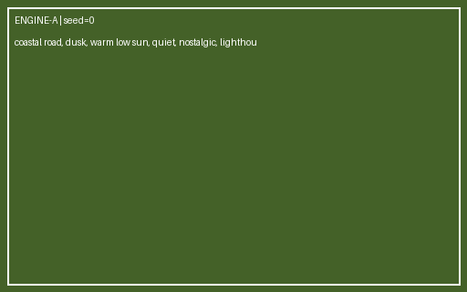
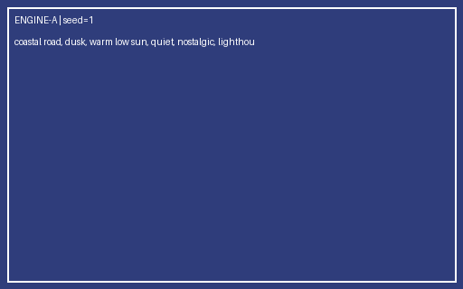
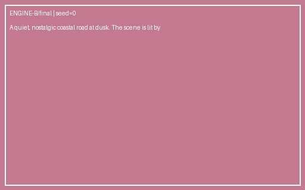
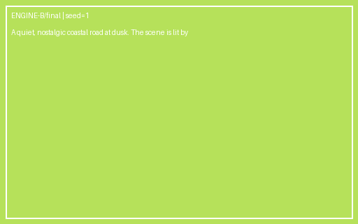

| Generation | #1 ★ kept |
| Seed | 0 |
| Parameters | none |
| Engine version | tagline-2.3 |
| SHA256 | 58a87ddec8f7f758 |
| Created | 2026-09-19T17:02:50+00:00 |
| Author | ameni |
coastal road, dusk, warm low sun, quiet, nostalgic, lighthouse far left background, vintage red car center on the road, sea fog rolling over the cliffs

| Generation | #2 |
| Seed | 1 |
| Parameters | none |
| Engine version | tagline-2.3 |
| SHA256 | 7a500a861e1af689 |
| Created | 2026-09-19T17:02:50+00:00 |
| Author | ameni |
coastal road, dusk, warm low sun, quiet, nostalgic, lighthouse far left background, vintage red car center on the road, sea fog rolling over the cliffs

| Generation | #3 |
| Seed | 0 |
| Parameters | quality=final |
| Engine version | verbosa-1.7 |
| SHA256 | a821d65586d579c5 |
| Created | 2026-09-19T17:02:50+00:00 |
| Author | ameni |
A quiet, nostalgic coastal road at dusk. The scene is lit by warm low sun, which shapes soft shadows and gives the image a clear, tangible atmosphere. The composition includes lighthouse, positioned far left, background; vintage red car, positioned center, on the road; sea fog, positioned rolling over the cliffs. The overall mood is quiet, nostalgic, cinematic and richly detailed.

| Generation | #4 |
| Seed | 1 |
| Parameters | quality=final |
| Engine version | verbosa-1.7 |
| SHA256 | d9ee0c39a606f7f1 |
| Created | 2026-09-19T17:02:50+00:00 |
| Author | ameni |
A quiet, nostalgic coastal road at dusk. The scene is lit by warm low sun, which shapes soft shadows and gives the image a clear, tangible atmosphere. The composition includes lighthouse, positioned far left, background; vintage red car, positioned center, on the road; sea fog, positioned rolling over the cliffs. The overall mood is quiet, nostalgic, cinematic and richly detailed.